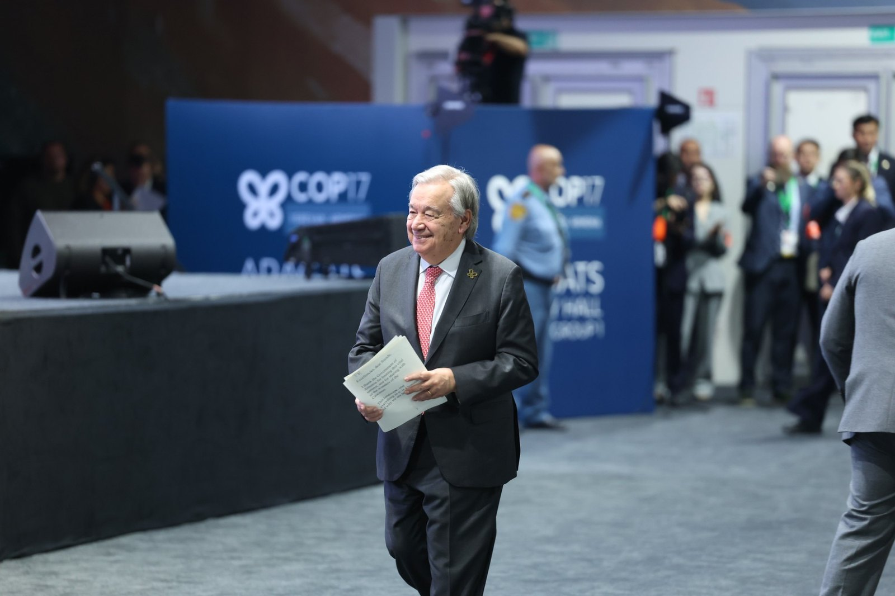
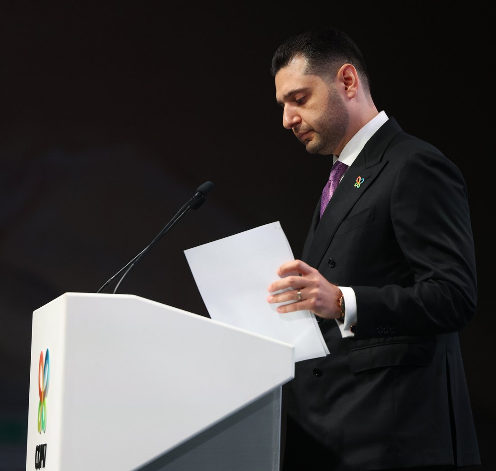
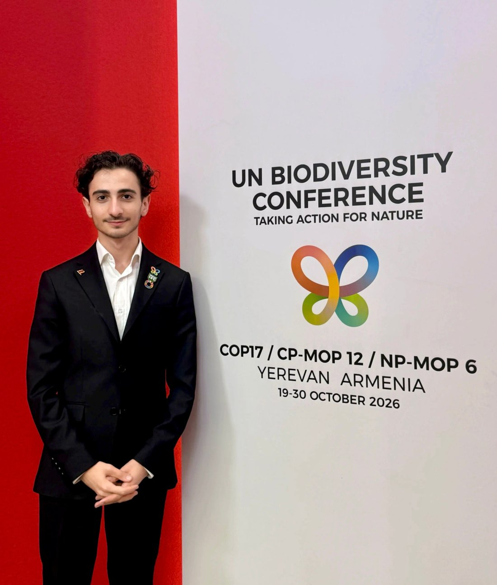

On Friday 16 October, three days before the negotiators sat down to work, world leaders gathered in Yerevan and put their names to one idea: it is time to take action for nature.
COP17 is the 17th UN Biodiversity Conference. Its formal talks run from 19 to 30 October, and they will be long, technical and often slow. Armenia, as host, chose to open with something different: a Leaders’ Summit, a single day that puts presidents, prime ministers and the head of the United Nations in the same room before the detail begins. This is a recap of what happened, what was agreed, and what it means for the two weeks ahead.
Why start with leaders?
Negotiations move faster when the politics have already been settled at the top. Armenia’s Environment Minister, Hambardzum Matevosyan, said the aim was to raise the political weight of COP17 and give the negotiators backing so that talks can “proceed more smoothly”. He described it as the largest, most inclusive and wide-ranging leaders’ summit ever held at a biodiversity COP.
Who was in the room
Prime Minister Nikol Pashinyan opened the summit. Speaking about Armenia’s own story, he said his country owes a debt to its nature, and pointed to Lake Sevan, where the whitefish population has grown from a few hundred tonnes to more than 4,500 tonnes, according to JAMnews’ report of his speech.
UN Secretary-General António Guterres gave the keynote. Iranian President Masoud Pezeshkian linked the destruction of forests, soils, wetlands and water to war, and Georgian Prime Minister Irakli Kobakhidze framed nature protection as an investment and called for cooperation across shared ecosystems. Teresa Ribera spoke for the European Commission, and Turkey sent its Minister of Agriculture and Forestry, Ibrahim Yumaklı.
It was not only governments. The declaration the summit adopted lists representatives of international organisations, Indigenous Peoples and local communities, women, youth, business and finance, civil society and academia alongside the heads of state and government.
The numbers behind the call to act

The Secretary-General’s speech was the clearest picture of where the world stands. In plain terms:
- More than a million species are at risk of extinction.
- On current promises, only 26% of the world’s land and 12% of its oceans would be protected by 2030, short of the 30% goal.
- Money for nature is less than half of the $200 billion a year the world agreed to mobilise.
- For every dollar spent protecting nature, about $30 is spent on activities that damage it. In 2023 that was roughly $7.3 trillion.
- Getting to 2030 needs around $571 billion a year in nature-based solutions, about 0.5% of global GDP.
Progress remains uneven and insufficient.
That was the Secretary-General’s own verdict, though he also pointed to real progress. Since 2022, an extra 1.3 million square kilometres of land and 6 million square kilometres of ocean have gained formal protection, and nearly 90% of countries have now set national biodiversity targets. He ended by asking leaders to act for our children, our future and all life on Earth.
What was agreed: the Yerevan Declaration

The summit closed with the adoption of the Yerevan Declaration: Taking Action for Nature. It reaffirms the goal of halting and reversing biodiversity loss by 2030, and living in harmony with nature by 2050, under the Kunming-Montreal Global Biodiversity Framework. The commitments include:
- Delivering at home through whole-of-government approaches, not just environment ministries.
- Mobilising increased, adequate and predictable public and private finance for nature.
- Strengthening how progress is monitored, planned, reported and reviewed.
- Making sure Indigenous Peoples, local communities, women and youth take part in a meaningful way.
- Sharing fairly the benefits from digital sequence information, the genetic data from nature that sits in global databases.
- Supporting the global review of progress under the Framework.
The European Union used the moment to reaffirm its pledge to double international biodiversity funding from €3.5 billion to €7 billion by 2030, with a focus on vulnerable developing countries.
One honest caveat: a declaration is a political promise, not a legal treaty. Its power is in setting direction and making it harder for any government to walk back from. Whether it matters will be decided in the next two weeks, line by line.
Why this matters for the next two weeks
The hardest questions at COP17 are the ones the declaration names: money, review and fairness. Who pays, how much and how fast? How will countries be held to their targets? And who benefits when companies use genetic data from nature? A strong political signal on day zero does not answer those questions, but it changes the room the negotiators walk into.
My lens: children and young people

I am at COP17 as a member of the UNICEF Global Delegation, with one thread to pull: making sure children and young people are included, and that biodiversity is protected with their future in mind. The declaration names youth participation, and the Secretary-General spoke of the energy of young people and of his own children and grandchildren. That is a welcome start. The next step is to make “meaningful participation” concrete: real seats, real access, and clear language in the decisions that come out of Yerevan.
What I will be watching
- Whether the finance promises turn into decisions with numbers and dates.
- How the global review of progress is designed, and whether it is honest about the gaps.
- How benefit-sharing from digital sequence information is settled.
- Whether youth, and children, appear in the final text in ways that can be acted on.
You can follow where I will be each day on my COP17 schedule, and the daily news will appear in the Newsroom.
Sources
- ARMENPRESS (2026). COP17: Yerevan Declaration adopted following leaders’ summit. https://armenpress.am/en/article/1263055
- ARMENPRESS (2026). Yerevan Declaration provides important political support for COP17 talks, says Hambardzum Matevosyan. https://armenpress.am/en/article/1263074
- UN News (2026). Guterres urges faster action and financing to stop biodiversity loss. https://news.un.org/en/story/2026/10/1168610
- Public Radio of Armenia (2026). UN Secretary-General calls for urgent action to protect biodiversity at COP17 in Yerevan. https://en.armradio.am/2026/10/16/un-secretary-general-calls-for-urgent-action-to-protect-biodiversity-at-cop17-in-yerevan/
- JAMnews (2026). “We owe a debt to nature”: Leaders’ summit at COP17 in Armenia. https://jam-news.net/leaders-summit-at-cop17-in-armenia/
- European Commission (2026). EU delivering on COP17 nature and biodiversity targets. https://environment.ec.europa.eu/news/eu-delivering-cop17-nature-biodiversity-targets-2026-10-16_en